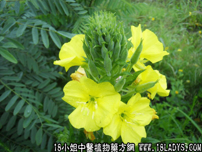

(本文解释权归中药材天地网兄弟站-18小姐中医植物药方网所有,如需转载请注明出处)

别名：岗芝麻、假芝麻、假油麻。
植物名：山芝麻。
生长环境：本品为矮小灌木，常生于山野和旷地上。
分布：印尼，泰国和我国；我国南部普遍产之。
入药部分：根。
采集期：全年。
自采地点：山岗。
性味：清实热、消瘀滞。
主治、用量和用法：1、治癍痧热病：干用1至2两、清水煎服；2、牙痛：干用5钱至1两，煎水含漱；3、苦物吐血：干用1至2两，猪瘦肉适量，煎服；4、大肠实热：干用1至2两，清水煎服；5、猪牛热病：干用10至20两，清水煎服。
验方1：（治实热方）山芝麻1两、岗梅根5钱、狗肝菜5钱、鸭脚皮5钱、苦地胆5钱、蛇泡簕5钱、清水四碗，煎成一碗服。
（方解）本方狗肝菜清肝胃热；山芝麻、苦地胆、蛇泡簕清热解毒。加以鸭脚皮之透达，岗梅根之救津，此方用于实热有效。
（方歌）实热入焚此方求，山芝麻与地胆头，鸭脚狗肝蛇泡簕，救津胜与岗梅俦。
验方2：（治癍痧热病方）山芝麻1两，救必应5钱、鹰不柏5钱、海金沙藤5钱、木患根1两、清水四碗煎成一碗服。
（方解）山芝麻，木患根清胃热；鹰不柏，救必应解毒；海金沙藤利水，使实热从小便而去。
（方歌）癍痧热病山芝麻，海金沙藤木患根，鹰不柏来救必应，热从溲解此方珍。
验方3：（治伤寒夹色方）山芝麻根1两、救必应5钱、狗肝菜5钱、木患根5钱、五指柑5钱、榕树须5钱、狮子滚球5钱、鸭脚皮5钱，清水五碗，煎成一碗服。
（方解）是症由于房劳感冒，外邪入里而成。故用山芝麻根、木患根、救必应清热、散瘀，五指柑、榕树须，狗肝菜，狮子滚球入里透邪；鸭脚皮领诸药以达外，合成透邪清罡，散瘀解毒之剂。
（方歌）伤寒夹色山芝麻，木患榕须狗肝夸，五指感来救必应，滚球鸭脚治无差。
禁忌：孕妇慎用，过服伤胎。
(本文解释权归中药材天地网兄弟站-18小姐中医植物药方网所有,如需转载请注明出处)